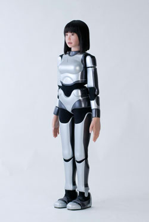

¿Qué es la Robótica Humanoide?
Los humanoides son robots bípedos de uso general, modelados a partir del factor de forma humano y diseñados para trabajar junto a los humanos y aumentar la productividad. Son capaces de aprender y realizar diversas tareas, como agarrar un objeto, mover un contenedor, cargar o descargar cajas, entre otras.

Características Principales
- Forma y proporciones humanas
- Capacidad para interactuar con herramientas y entornos diseñados para humanos
- Potencial para realizar tareas similares a las humanas
Estos robots se utilizan en una amplia gama de aplicaciones, desde la asistencia en tareas peligrosas hasta la compañía y el entretenimiento.